시작¶
비주얼 스튜디오 코드는 가볍고, 맥,리눅스,윈도우에서 모두 실행 가능하고, 무료인 코드편집기입니다. Sublimetext, Atom 에디터의 장점들을 잘 모아 만든 에디터입니다. 특히 서브라임텍스트의 한글입력 문제,인코딩 문제를 깔끔히 해결한 에디터입니다.
다양한 언어를 지원하며, 확장 프로그램을 통해 에디터 기능을 확장시킬수 있습니다.
설치¶
맥, 리눅스 를 통해 설치를 할 수 있으며, 윈도우는 인스트롤러를 통해 다운로드해서 설치를 진행할 수 있습니다.
윈도우는 .NET Framework 4.5.2 이상이 필요합니다.
Tip
설치 프로그램에서 vscode를 %PATH% 에 추가하므로 콘솔에서 'code'를 입력해서 해당 폴더에서 vscode를 열 수 있습니다. %PATH% 환경 변수를 변경하려면 콘솔을 다시 시작해야 합니다.
vscode 는 설치시 자동으로 설치되는 확장기능이 있습니다. 그런 확장기능을 이용하려면 따로 설치해야하는 요소들이 있습니다. git을 사용하려면 git-scm 을 설치해야하고, 자바스크립트 등의 확장기능을 이용하려면 nodejs 를 설치해야하며, TypeScript 등을 설치해야합니다.
추가적으로 이용할 도구에 따라 Yeoman, Gulp, Bower 등등을 설치할수도 있습니다.
기초¶
vscode 를 실행하면 첫화면에 시작하기 하면이 나옵니다.
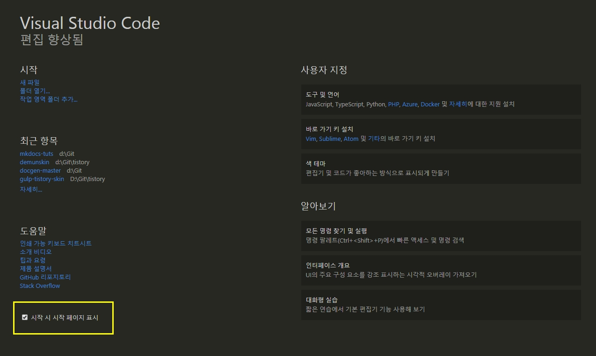
시작할때 마다 보일수도 있고, 왼쪽 하단에 체크를 풀면 안나오게 할 수도 있습니다.
우측 하단에 알아보기 > 대화형 실습에서 직접 코드를 실행하고 결과를 볼수 있는 놀이터도 있습니다.
명령팔레트¶
에디터의 모든 명령에 바로 접근할 수 있는 명령팔레트입니다.
단축키: ctrl+shift+p
또한 우측에 보면 기본단축키로 명령을 실행할 수도 있습니다.
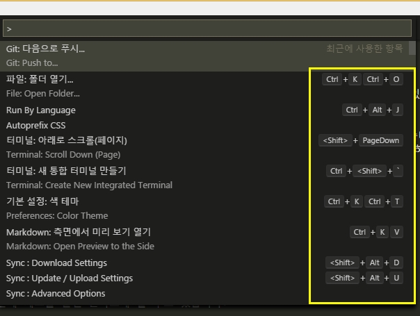
단축키에 대한 모든 명령은 맥, 리눅스, 윈도우 에 있습니다.
ctrl+p: 파일이나 기호를 탐색합니다.ctrl+shift+tab: 마지막 연 파일에 접근합니다.ctrl+shift+p: 편집기 명령으로 바로 이동합니다.ctrl+shift+o: 파일의 특정 기호로 이동합니다.ctrl+g: 파일의 특정 행으로 이동합니다.
ctrl+p 를 눌러 ? 를 입력하면 명령창에서 행할수 있는 명령 목록이 나옵니다.
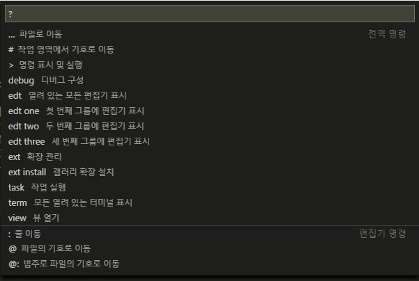
빠른열기¶
모든 파일을 단축키로 빠르게 열수 있습니다.
단축키: ctrl+p
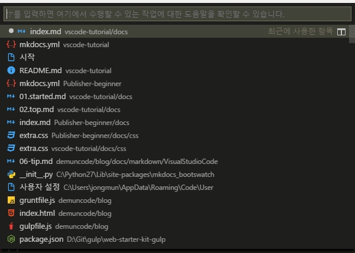
상태표시줄¶
에디터 하단에 현재 상태를 표시하고 있습니다.
단축키: ctrl+shift+m
신속하게 프로젝트의 오류 및 경로로 이동합니다.
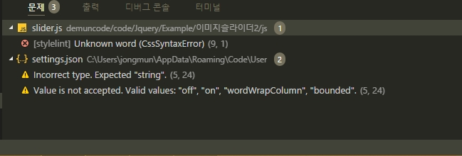
F8 또는 shift+F8 을 이용해서 오류 사이를 이동할 수 있습니다. 또는 키보드의 위아래 화살표로 이동이 가능합니다.
언어모드¶
파일형식에 맞는 언어모드로 자동으로 인식하지만 못할때는 단축키로 지정할 수 있습니다.
단축키: ctrl+km
ctrl+km은ctrl+k을 누르고 다음으로m을 누르면 됩니다.
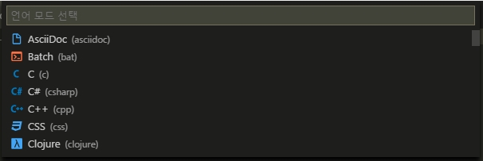
테마변경¶
기본적으로 제공하는 테마를 단축키로 빠르게 선택할 수 있습니다.
단축키: ctrl+k, ctrl+t
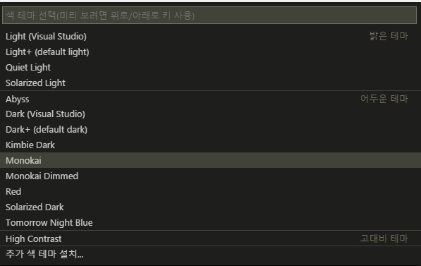
또한 파일>기본설정>색 테마 로 선택할 수도 있습니다.
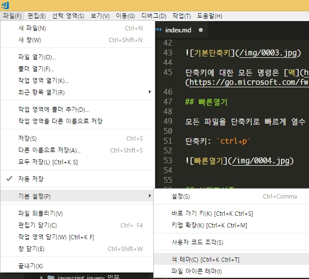
파일아이콘테마¶
기본적으로 파일의 아이콘을 표시하지만 확장기능을 통해 직관적으로 파일의 아이콘을 보여줍니다.
파일>기본설정>파일 아이콘 테마 를 통해서 적용할 수 있습니다.
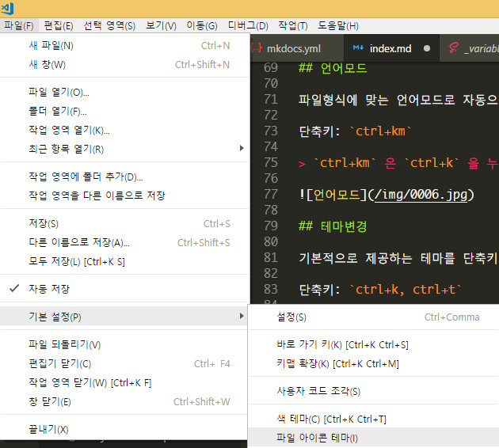
Material Icon Theme 를 설치한 후 적용한 아이콘테마의 모습입니다.
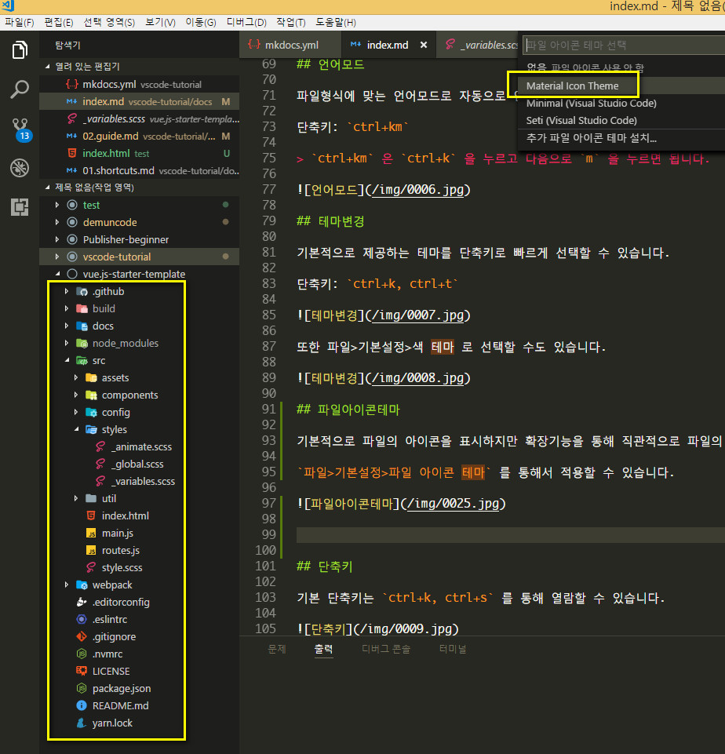
단축키¶
기본 단축키는 ctrl+k, ctrl+s 를 통해 열람할 수 있습니다.
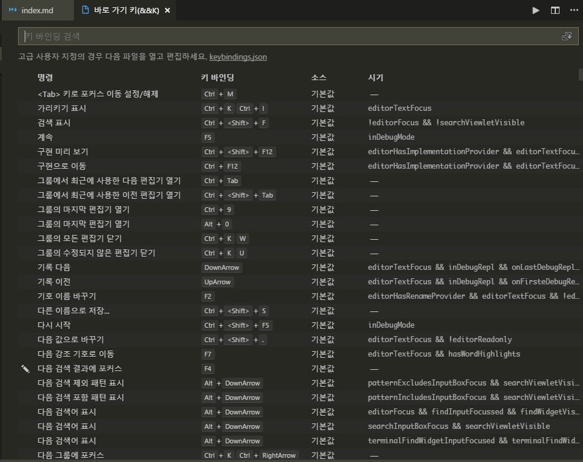
단추키를 사용자정의 할때는 keybindings.json 파일을 통해 지정할 수 있습니다.
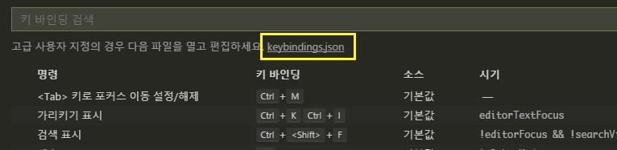
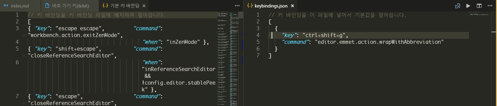
기본설정¶
vscode 의 모든 설정은 파일>기본설정>설정에 지정되어 있습니다.
단축키: ctrl+,
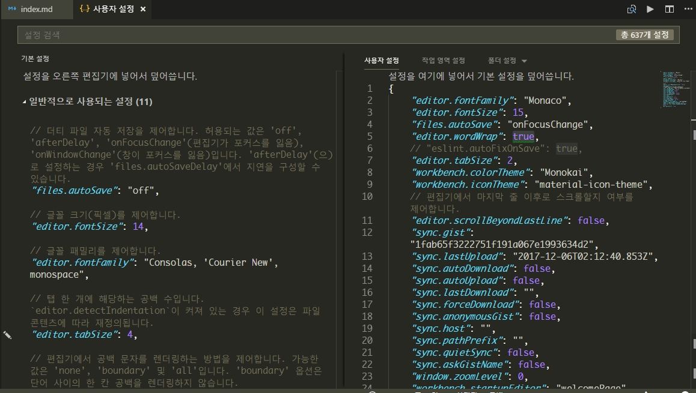
왼쪽의 기본설정을 복사해서 오른쪽의 사용자설정에 붙여넣고 수정해서 사용합니다.
또는 왼쪽의 기본설정에 연필 아이콘을 클릭하면 편집을 통해 수정하면 오른쪽에 자동 입력되어 집니다.
확장프로그램¶
에디터의 기본 기능보다 더 많은 기능을 마켓 플레이스에서 다운로드해서 사용할 수 있습니다.
단축키: ctrl+shift+x
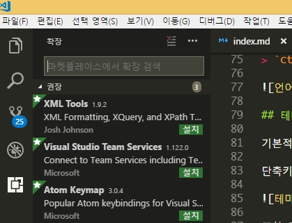
vscode 는 확장프로그램을 좀더 효율적으로 관리하기 위해 설치된 확장만 표시, 모든 확장 표시, 사용할 수 없는 확장 표시 등등...다양한 메뉴를 제공하고 있습니다.
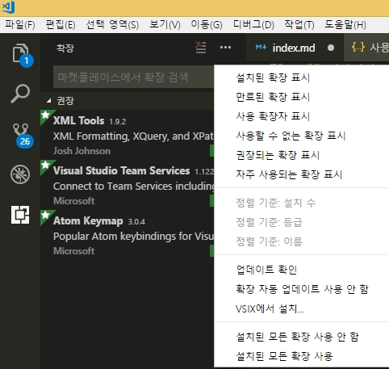
터미널¶
vscode 는 하단에 터미널을 통해 명령을 실행할 수도 있습니다. 보기>통합터미널 로 열 수 있습니다.
단축키: ctrl+`
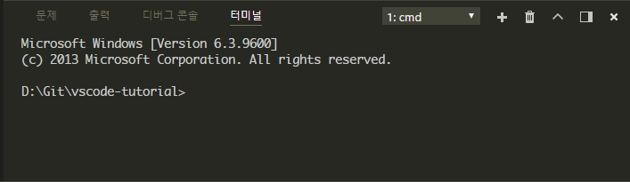
사이드바 전환¶
에디터의 사이드바를 열고 닫습니다.
단축키: ctrl+b
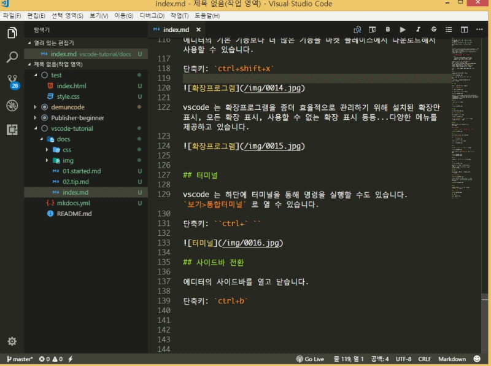
젠모드¶
단축키: ctrl+k, z
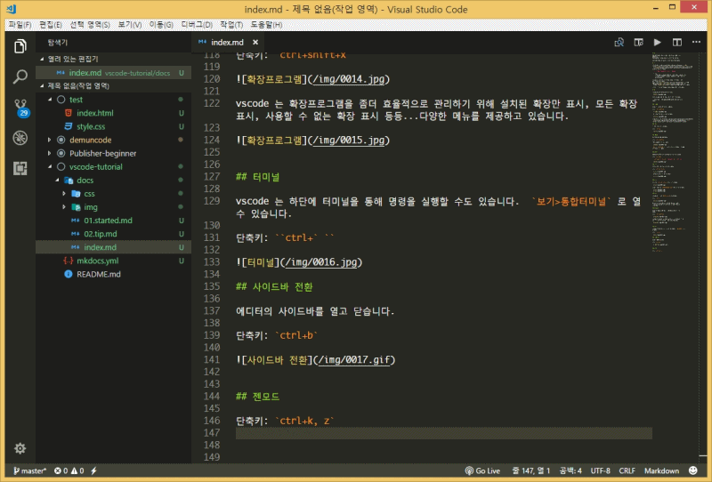
나란히편집¶
에디터를 둘 또는 셋으로 나란이 놓고 사용할 수 있습니다.
단축키: ctrl+\
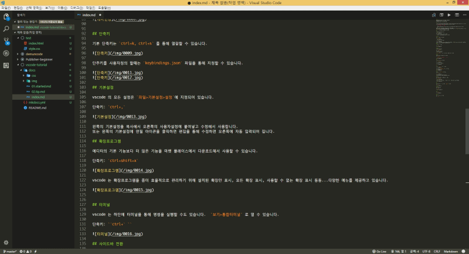
에디터간 전환은 ctrl+1, ctrl+2, ctrl+3 등으로 할 수 있으며, ctrl+w 누르면 탭이 닫힙니다.

다중커서¶
커서를 여러개 만들어서 한번에 작업을 할 수 있습니다.
단축키: ctrl+alt+up , ctrl+alt+down
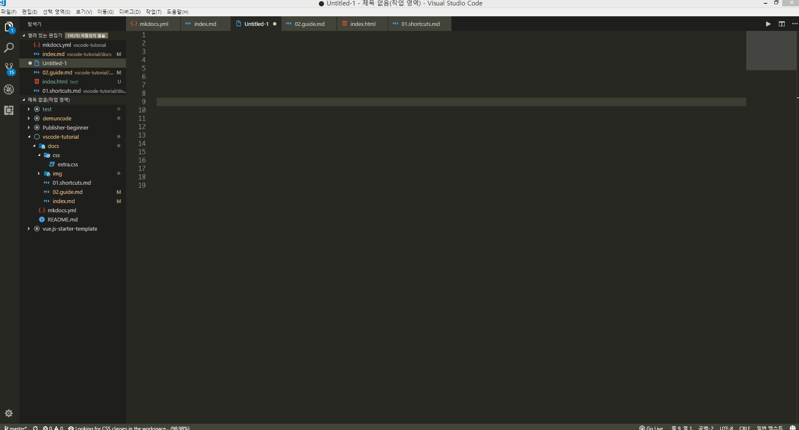
행 복사¶
단축키: shift+alt+up , shift+alt+down

코드접기/펴기¶
단축키: ctrl+shfit+[ , ctrl+shfit+]

마크다운 미리보기¶
단축키: ctrl+shfit+v
또한 옆에서 미리보기를 하면서 수정까지 실시간으로 반영되게 할 수도 있습니다.
단축키: ctrl+kv

emmet¶
vscode 에서는 기본적으로 emmet 확장기능을 지원합니다.
젠코딩을 하면 툴팁으로 어떻게 보여지는 미리보기를 통해 보여져서 코딩하기 정말 좋습니다.

emmet 은 기본적으로 활성화되어 있어 바로 사용가능하지만 혹시 활성화가 안된다면 설정에 아래구문을 확인하면 됩니다.
1 | "emmet.triggerExpansionOnTab": true |